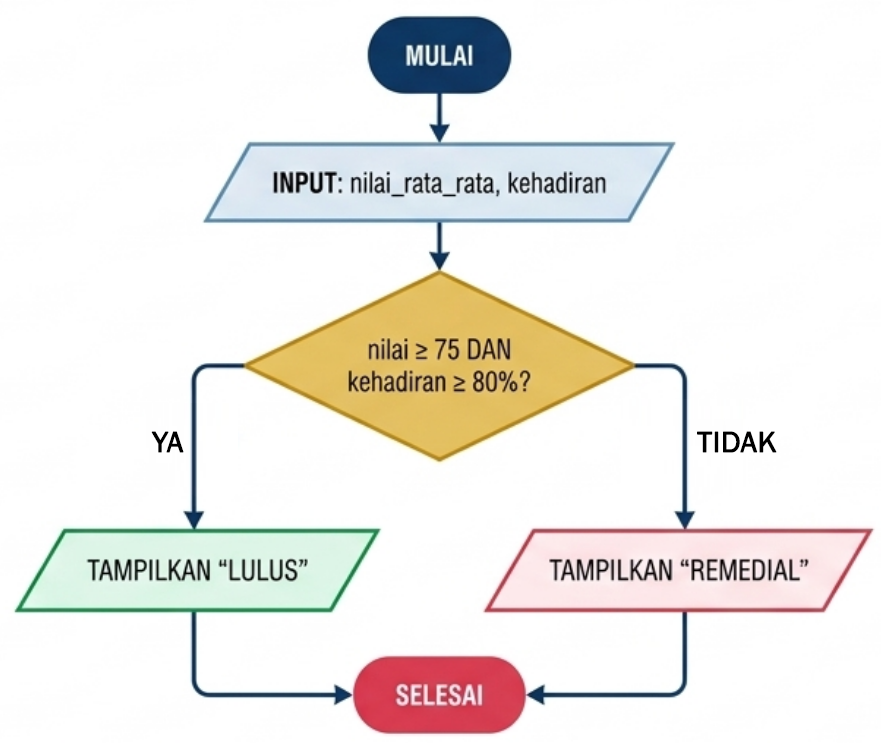
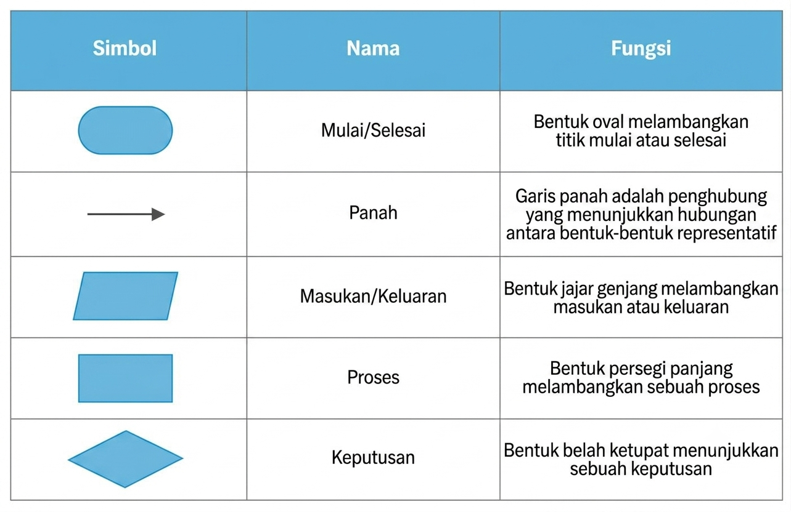

🎯 Tujuan Pembelajaran
- Siswa mampu menjelaskan pengertian algoritma dengan bahasa sendiri secara tepat
- Siswa mampu menyebutkan dan menjelaskan lima sifat fundamental algoritma
- Siswa mampu mengidentifikasi algoritma dalam aktivitas sehari-hari
- Siswa mampu menyusun algoritma sederhana untuk masalah rutin
- Siswa mampu mengaitkan pembelajaran algoritma dengan nilai karakter Islami
A. Pengertian Algoritma
1. Definisi Algoritma
Algoritma adalah serangkaian langkah-langkah logis, sistematis, dan terurut yang dirancang untuk menyelesaikan suatu masalah tertentu. Setiap langkah harus jelas, tidak ambigu, dan memiliki titik akhir yang pasti. Algoritma bukan hanya milik komputer — ia adalah cara berpikir yang dapat diterapkan dalam segala aspek kehidupan.
Kata "algoritma" berasal dari latinisasi nama seorang matematikawan Muslim Persia, Muhammad ibn Musa al-Khawarizmi (780–850 M). Beliau menulis kitab monumental "Al-Kitab al-Mukhtasar fi Hisab al-Jabr wal-Muqabala" yang menjadi fondasi ilmu aljabar dan komputasi modern. Dalam bahasa Latin, karya beliau diterjemahkan sebagai "Algoritmi de numero Indorum", dan dari sinilah istilah "algoritma" lahir.
Ilmu itu tidak datang dengan sendirinya, ia harus dicari dengan kesabaran, dipelajari dengan ketelitian, dan diamalkan dengan keikhlasan.
— Imam Syafi'i2. Mengapa Algoritma Penting?
Dalam kehidupan modern, algoritma ada di mana-mana:
- Media sosial menggunakan algoritma untuk menentukan konten yang muncul di beranda Anda
- Aplikasi peta (Google Maps, Waze) menggunakan algoritma untuk mencari rute tercepat
- E-commerce menggunakan algoritma untuk merekomendasikan produk yang sesuai selera
- Sistem perbankan menggunakan algoritma untuk mendeteksi transaksi mencurigakan
- Madrasah menggunakan algoritma dalam jadwal pelajaran, pembagian kelas, hingga sistem penilaian
Bagi siswa kelas XII yang akan segera melanjutkan ke perguruan tinggi atau dunia kerja, memahami algoritma adalah kunci membuka peluang di era digital. Bukan berarti semua harus menjadi programmer — tetapi kemampuan berpikir algoritmik akan membuat Anda lebih terstruktur, logis, dan efektif dalam menyelesaikan masalah apa pun.
3. Tiga Syarat Algoritma yang Baik
Sebuah urutan langkah baru dapat disebut algoritma jika memenuhi tiga syarat berikut:
| Syarat | Penjelasan | Contoh |
|---|---|---|
| Jelas (Unambiguous) | Setiap langkah tidak menimbulkan makna ganda. Pembaca harus memahami dengan tepat apa yang harus dilakukan. | "Panaskan air hingga 100°C" ✓ (jelas) "Panaskan air sampai panas" ✗ (ambigu) |
| Terbatas (Finite) | Algoritma harus berhenti dalam jumlah langkah tertentu. Tidak boleh ada perulangan tanpa akhir. | "Ulangi 10 kali" ✓ (terbatas) "Ulangi terus" ✗ (tak terbatas) |
| Dapat Dijalankan (Executable) | Setiap langkah harus realistis dan bisa dilaksanakan dengan sumber daya yang tersedia. | "Bagi 10 dengan 2" ✓ (bisa) "Bagi 10 dengan 0" ✗ (tidak mungkin) |
B. Contoh Algoritma dalam Kehidupan
💡 Contoh 1: Algoritma Membuat Teh Manis
Masalah: Kita ingin membuat segelas teh manis yang enak.
Input: Gelas, teh celup, gula, air panas, sendok
- Siapkan gelas bersih di atas meja
- Masukkan 1-2 sendok makan gula pasir dan 1 kantong teh celup ke dalam gelas
- Tuangkan air panas ke dalam gelas (±200 ml)
- Aduk perlahan hingga gula larut sepenuhnya dan warna teh berubah menjadi kemerahan
- Angkat kantong teh dan buang
- Teh manis siap disajikan
Output: Segelas teh manis yang siap diminum
✓ Setiap langkah jelas, ✓ urutannya logis, ✓ ada awal dan akhir, ✓ siapapun bisa mengikuti.
💡 Contoh 2: Algoritma Shalat Subuh
Masalah: Menunaikan shalat Subuh dengan benar dan khusyuk.
Input: Wudhu sudah sah, pakaian menutup aurat, menghadap kiblat, waktu Subuh telah masuk
- Berdiri tegak menghadap kiblat, niat di dalam hati
- Mengangkat kedua tangan sejajar telinga, mengucapkan Takbiratul Ihram
- Bersedekap, membaca doa iftitah
- Membaca Surat Al-Fatihah
- Membaca surat pendek (misal: Al-Ikhlas)
- Ruku' dengan tuma'ninah, membaca doa ruku'
- I'tidal, membaca doa i'tidal
- Sujud pertama, membaca doa sujud
- Duduk di antara dua sujud
- Sujud kedua
- Berdiri untuk rakaat kedua, ulangi langkah 4-10
- Duduk tahiyat akhir, membaca tahiyat
- Mengucapkan salam ke kanan dan ke kiri
Output: Shalat Subuh 2 rakaat sah dan diterima insya Allah
📋 Studi Kasus: Algoritma Pendaftaran Siswa Baru di MAS Diniyah Limo Jurai
Masalah: Madrasah membutuhkan alur pendaftaran calon siswa baru tahun ajaran 2026/2027.
Input: Nama lengkap, NISN, asal sekolah, nilai rapor, foto 3×4, fotokopi KK, surat keterangan sehat.
- Calon siswa mengambil formulir di ruang TU
- Mengisi formulir dengan data lengkap dan benar
- Melampirkan seluruh dokumen persyaratan
- Menyerahkan berkas ke panitia pendaftaran
- Panitia memverifikasi kelengkapan dokumen
- JIKA lengkap → lanjut ke tahap tes; JIKA tidak → kembalikan untuk dilengkapi
- Calon siswa mengikuti tes wawancara dan baca tulis Al-Qur'an
- Panitia mengumumkan hasil seleksi dalam 7 hari kerja
- Siswa yang diterima melakukan daftar ulang
Output: Status penerimaan (diterima/tidak) dan jadwal orientasi siswa baru.
C. Lima Sifat Fundamental Algoritma
Menurut Donald E. Knuth dalam bukunya "The Art of Computer Programming", sebuah algoritma harus memiliki lima sifat fundamental berikut:
| No | Sifat | Penjelasan | Contoh Konkret | Kesalahan Umum |
|---|---|---|---|---|
| 1 | Input (Masukan) | Data/kondisi awal yang dibutuhkan sebelum proses dimulai. Bisa 0 atau lebih. | Untuk menghitung luas persegi panjang, input-nya: panjang dan lebar. | Langsung menghitung tanpa mengetahui data yang diperlukan. |
| 2 | Output (Keluaran) | Hasil yang diharapkan setelah semua langkah selesai dieksekusi. Minimal 1. | Output: nilai luas = panjang × lebar (misal: 50 cm²). | Proses berjalan tanpa menghasilkan apapun yang berguna. |
| 3 | Definiteness (Kejelasan) | Setiap instruksi spesifik, tidak ambigu, hanya satu interpretasi. | "Panaskan air hingga 100°C" ✓ | "Tambahkan sedikit gula" ✗ — berapa "sedikit"? |
| 4 | Finiteness (Keterbatasan) | Algoritma harus berhenti setelah sejumlah langkah tertentu. | Loop "ulangi 10 kali" memiliki batas jelas. | Perulangan tanpa kondisi berhenti → program hang. |
| 5 | Effectiveness (Efektivitas) | Setiap langkah bisa dilaksanakan dan memberi kontribusi nyata menuju solusi. | "Bagi 10 dengan 3" → efektif. | "Bagi 10 dengan 0" → tidak efektif (error). |
🌿 Refleksi: Lima Sifat dalam Kehidupan Muslim
Lima sifat algoritma ternyata sejalan dengan adab seorang Muslim dalam bekerja:
- Input → Niat yang benar sebelum beramal
- Output → Hasil yang bermanfaat bagi sesama
- Definiteness → Kejelasan dalam beribadah (tidak asal-asalan)
- Finiteness → Menghargai waktu, tidak menunda-nunda
- Effectiveness → Amal yang diterima (sesuai syariat)
D. Visualisasi Algoritma: Flowchart Sederhana
Salah satu cara menyajikan algoritma adalah dengan flowchart (bagan alir). Berikut contoh flowchart untuk menentukan kelulusan siswa:


E. Contoh Pseudokode
Pseudokode adalah cara menulis algoritma yang mirip bahasa pemrograman namun mudah dibaca manusia. Berikut contoh pseudokode untuk menentukan kelulusan siswa MAS Diniyah Limo Jurai:
💡 Simulasi dengan Data Nyata
Kasus 1: Ahmad, nilai 85, kehadiran 90%
→ Output: "Ahmad dinyatakan LULUS. Masya Allah!"
Kasus 2: Fatimah, nilai 80, kehadiran 70%
→ Output: "Fatimah perlu meningkatkan kehadiran."
Kasus 3: Yusuf, nilai 65, kehadiran 85%
→ Output: "Yusuf perlu remedial. Tetap semangat!"
F. Nilai Karakter yang Ditanamkan
🌿 Kesabaran, Ketelitian, dan Kejujuran
Menyusun algoritma mengajarkan kita untuk tidak terburu-buru dalam menyelesaikan masalah. Setiap langkah harus dipikirkan matang-matang, diuji kebenarannya, dan dijalankan dengan penuh tanggung jawab.
Sebagaimana Rasulullah ﷺ bersabda:
Sesungguhnya Allah itu Maha Lembut dan mencintai kelembutan dalam segala urusan.
— HR. Bukhari & MuslimApabila seseorang di antara kamu melakukan suatu pekerjaan, maka hendaklah ia melakukannya dengan itqan (tekun dan sempurna).
— HR. BaihaqiAlgoritma melatih kita untuk sabar mengurai masalah satu per satu, teliti dalam setiap langkah, dan bertanggung jawab atas solusi yang kita rancang. Inilah adab seorang penuntut ilmu — ia tidak asal-asalan dalam bekerja, karena setiap amal akan dipertanggungjawabkan.
Rangkuman Pertemuan 01
- Algoritma adalah langkah logis, sistematis, dan terurut untuk menyelesaikan masalah
- Istilah "algoritma" berasal dari nama Al-Khawarizmi (780–850 M)
- Tiga syarat algoritma baik: Jelas, Terbatas, Dapat Dijalankan
- Lima sifat fundamental: Input, Output, Definiteness, Finiteness, Effectiveness
- Algoritma dapat disajikan dalam 3 bentuk: teks deskripsi, flowchart, pseudokode
- Algoritma melatih kesabaran, ketelitian, kejujuran, dan tanggung jawab
Uji Formatif Pertemuan 01
Ukur pemahamanmu tentang materi Pengertian & Sifat Algoritma melalui uji formatif interaktif. Jawab pertanyaan dengan jujur untuk mengetahui sejauh mana penguasaanmu terhadap konsep dasar algoritma.
💡 Tips: Pastikan kamu sudah memahami materi sebelum memulai. Bismillah, semoga sukses!
G. Latihan Pemahaman
📝 Soal Pilihan Ganda
1. Istilah "algoritma" berasal dari nama seorang ilmuwan Muslim, yaitu...
2. Berikut yang BUKAN merupakan sifat fundamental algoritma adalah...
3. Perhatikan instruksi: "Tambahkan garam secukupnya". Instruksi ini melanggar sifat algoritma...
4. Sebuah algoritma yang terus-menerus berputar tanpa henti melanggar sifat...
5. Simbol belah ketupat (◇) dalam flowchart menunjukkan...
📝 Soal Esai
1. Jelaskan dengan bahasa sendiri apa yang dimaksud dengan algoritma, dan berikan 2 contoh algoritma dalam kehidupan sehari-hari di lingkungan madrasah!
2. Sebutkan dan jelaskan lima sifat fundamental algoritma menurut Donald E. Knuth!
3. Buatlah algoritma (dalam bentuk teks deskripsi) untuk menyelesaikan masalah: "Menentukan bilangan ganjil atau genap dari sebuah bilangan bulat yang diinputkan"! Sertakan input, proses, dan output!
4. Hubungkan nilai-nilai karakter Islami dengan pembelajaran algoritma. minimal 3 nilai!
H. Tugas Praktik
📋 Tugas Individu (Dikumpulkan Pertemuan Berikutnya)
- Amati 3 aktivitas rutin yang kamu lakukan setiap hari (misal: mandi, shalat, belajar). Tuliskan masing-masing dalam bentuk algoritma (teks deskripsi) yang jelas, terurut, dan memenuhi 3 syarat algoritma baik!
- Pilih 1 dari 3 algoritma di atas, kemudian buatlah dalam bentuk flowchart menggunakan simbol standar. Gunakan kertas A4 atau aplikasi draw.io (gratis)!
- Cari informasi tentang Al-Khawarizmi minimal dari 2 sumber berbeda. Tuliskan ringkasan 1 halaman tentang: siapa beliau, karya-karyanya, dan kontribusinya terhadap ilmu komputer modern!
- Refleksi: Tuliskan 1 paragraf tentang bagaimana pembelajaran algoritma hari ini dapat kamu terapkan dalam kehidupan sebagai seorang santri!
⭐ Tugas Tambahan (Bonus Nilai)
- Buatlah video pendek (1-2 menit) yang menjelaskan salah satu contoh algoritma dalam kehidupan sehari-hari! Upload ke YouTube/Instagram dengan hashtag #AlgoritmaDiniyahLimoJurai
- Coba tuliskan algoritma sederhana dalam bentuk pseudokode untuk masalah: "Menghitung total belanja di kantin madrasah"! Sertakan minimal 3 item berbeda!
📚 Referensi Pertemuan 01
- Knuth, D. E. (1997). The Art of Computer Programming, Volume 1: Fundamental Algorithms (3rd Edition). Addison-Wesley.
- Munir, R. (2024). Algoritma dan Pemrograman: Konsep Dasar dan Implementasi (Edisi ke-3). Bandung: Informatika Bandung.
- Cormen, T. H. et al. (2022). Introduction to Algorithms (4th Edition). MIT Press.
- Kemendikbudristek RI. (2024). Informatika untuk SMA/MA Kelas XII. Jakarta: Pusat Kurikulum dan Perbukuan.
- Rashed, R. (2020). Al-Khwārizmī: The Beginnings of Algebra. Springer.